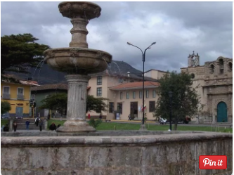
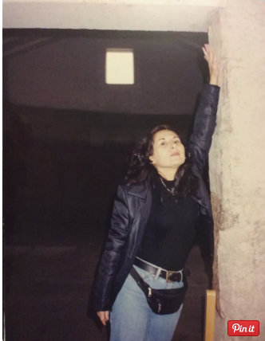

Se encuentra en la sierra norte del Perú. Es una de las regiones más antiguas, considerada uno de los zonas pre incas más importantes. En el cual se produjo la famosa captura del Inca Atahualpa. Su cultura popular es reconocida, en especial sus carnavales
en febrero, ganado vacuno, sus lácteos, su artesanía de cuero, impresión de vidrio y su minería. Hay muchos lugares maravillosos que visitar en la ciudad y sus alrededores: tales como su bosque de piedras, sus baños termales y las ventanillas
de Otuzco. Para llegar al departamento de Cajamarca, hay dos modalidades por vía terrestre en 13 horas y por vía aérea en una hora y media. Si planeas realizar un viaje hasta la ciudad.
About Español
-
La Plaza de Armas: conserva una pileta que muestra sus formas coloniales, con un aire similar a la Plaza de Cusco y Lima. Considerada una de las plazas más bellas y antiguas del país. Alrededor de la plaza se edificaron las principales de iglesias de la ciudad: La Catedral y San Francisco. Las cuales son de estilo barroco.
 About Español -
Cuarto de Rescate del Inca Atahualpa Está situado al costado de la iglesia San Francisco, junto con la poza del Inca o baños del Inca, es la única reliquia de la época Inca, ya que el resto fue destruido. La habitación es el lugar donde el Inca Atahualpa ofreció un cuarto lleno de oro y dos de plata como rescate para recuperar su libertad. El lugar ha resistido la prueba del tiempo, la lluvia, la destrucción que sufrió la ciudad en el siglo XVI. En este cuarto el Inca Atahualpa fue encarcelado durante 8 meses y 10 en 1532. El botín llego desde Pachacamac hasta Cusco. En las paredes hay una línea que señala la altura hasta donde prometió llenar el cuarto de oro. La mayoría de viajeros siempre levantan el brazo para ver qué tan alto llenarían el lugar, es un paso clásico.
 About Español -
Santa Apoloniaaa Es el Mirador que predomina en toda la ciudad. Se puede acceder por las trescientas escaleras. No obstante, al llegar todo el cansancio queda recompensado por la maravillosa vista que hay en la cima. En el lugar se encuentra la silla del Inca, que deviene de la época preinca. También se encuentra una iglesia muy interesante.
 About Español
About Español
-
Baños del Inca Los baños termales del Inca está situado a 6 km. de la ciudad. El lugar es considerado la capital de los baños termales del Perú. Por tener la primera fuente que se cita en la historia. El alto contenido de minerales de las aguas que afloran de los perolitos de alrededor de 75ºC presenta propiedades curativas que atraen a los viajeros desde tiempos prehispánicos. Cuenta la historia que a la llegada de Pizarro, Atahualpa se encontraba en ese lugar (antes Pultumarca). Actualmente hay servicios de pozas individuales, piscina y sauna. Además se encuentra la poza del Inca, donde se bañaba Atahualpa, ¿increíble, no?
 About Español
About Español